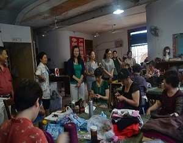

- 

- 1
- 2
- 3
- 4
- 5
- 简阳市关工委“杨森乳业”助学金 2012-02-02
- 资阳市关工委黄先荣主任一行莅简 2012-02-02
- 市人大常委会副主任张成芳到海螺 2012-02-02
- 资阳团市委书记唐剑锋莅临我市调 2012-02-02
- 资阳市2013年青年职业技能大赛机 2012-02-02
- 团市委助力贫困学子“圆梦”大学 2012-02-02
- 团市委书记谢林江同志带队看望慰 2012-02-02
- 资阳市关工委常务副主任曹荣火莅 2012-02-02
- 市委常委、总工会主席顾晓玲同志 2012-02-02
- 简阳市关工委“杨森乳业”助学金 2013-09-06
- 资阳市关工委黄先荣主任一行莅简 2013-09-06
- 市人大常委会副主任张成芳到海螺 2013-09-06
- 资阳团市委书记唐剑锋莅临我市调2013-09-06
- 资阳市2013年青年职业技能大赛机2013-09-06
- 团市委助力贫困学子“圆梦”大学 2013-09-06
- 团市委书记谢林江同志带队看望慰2013-09-06
- 资阳市关工委常务副主任曹荣火莅2013-09-06
- 市委常委、总工会主席顾晓玲同志2013-09-06
- 团市委积极助力简阳市2013年高校2013-09-06
- “实现伟大中国梦、建设美丽繁荣2013-09-06
- 顾秀莲在简调研：充分肯定我市关2013-09-06